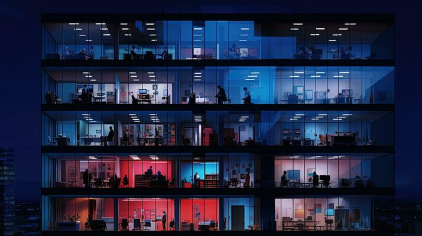

Crylet Global Market is committed to offering exceptional products sourced from the best suppliers around the world. Our mission is to ensure unparalleled quality and value in every category we offer, catering to all your needs with utmost reliability and excellence.
Established with a vision to connect global standards with local satisfaction, Crylet has grown to become a trusted name in the market. Our curated selection spans diverse categories, ensuring that we provide something for everyone. We believe in building lasting relationships with our customers by consistently delivering superior products and outstanding customer service.
Our team is dedicated to continuously improving and expanding our product range, keeping up with the latest trends and innovations. At Crylet, we prioritize customer satisfaction above all, striving to make your shopping experience as seamless and enjoyable as possible.
Thank you for choosing Crylet Global Market. We look forward to serving you and exceeding your expectations.
